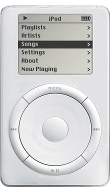
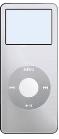

Apple 50 | iPod
1000 dal a zsebedben. Ez a mondat az egyik legismertebb marketing mondat valaha. 2001-ben Steve Jobs fellépett a színpadra Cupertino, Kaliforniában, és bejelentette az iPod-ot. Az iPod egy kicsi, merevlemez alapú zenelejátszó volt, amit az Apple a gyorsan növekvő hordozható MP3 lejátszó üzletnek szánt egy kis ajándékként, hogy azt is bekebelezze, mint ahogyan azt az Apple szokta.

Egy kép az első generációs iPod-ról. Fotó: Apple Inc. Licensz: Fair use, oktatási célokból felhasznált kép.
Az iPod-ot az Apple egyik legsikeresebb termékének hívni egy alulbecsülés lenne. Nem csak a leghíresebb zenelejátszó volt, hanem sok technológiai mérföldkövet is átlépett.
Pár generációval késöbb, 2005-ben, az Apple kiadta az iPod Nano-t. Az első színes kijelzős, flash tárhelyen alapuló iPodot.

Egy kép az első generációs iPod nano-ról. Fotó: Apple Inc. Licensz: Fair use, oktatási célokból felhasznált kép.
Viszont, az Apple következő termékére senki sem számíthatott. Az Apple valami olyan tervezett készíteni, ami meg fogja változtatni az egész világot, örökké.
Következő Fejezet →